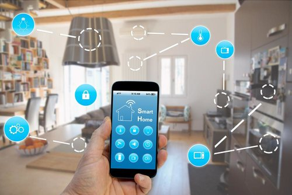

Keuzeproject 1
Een smart remote maken
Voor deze opdracht moesten wij een IR-toestel kunnen bedienen met een smartphone. Wij hadden hiervoor software en een webpagina nodig. Deze webpagina was een lay-out van de afstandsbediening. De software werd bewerkt met behulp van C++.
Deze opdracht betrof meer dan alleen programmeren. Het softwaregedeelte heb ik niet gedaan maar wel de webpagina omdat wij de taken in onze groep hadden verdeeld. De webpagina werd gemaakt met behulp van HTML. Het programma was al geschreven, echter moesten wij kleine aanpassingen verrichten op de HTML-code. Dit is de lay-out van de afstandsbediening. Fase 1
De opmaak moest volledig gedaan worden met behulp van CSS. Het deel van CSS vond ik heel leuk om te doen want het leek alsof …. het gezegde “Kleren maken de man.” hierop van toepassing was. Hier zult u "de man zien!" Fase 2
Omdat ik het zo fijn vond om te programmeren deed ik in mijn vrije tijd nog wat extra aanpassingen bij de opmaak, zoals het dynamischer maken van de toetsen en het maken van een favicon. De andere groepsleden gaven mij vaak complimentjes omdat zij mijn aanpassingen in de lay-out heel mooi vonden. Dit deed mij goed. Tenslotte zult u een kort filmpje van ons eindproject zien. Fase 3